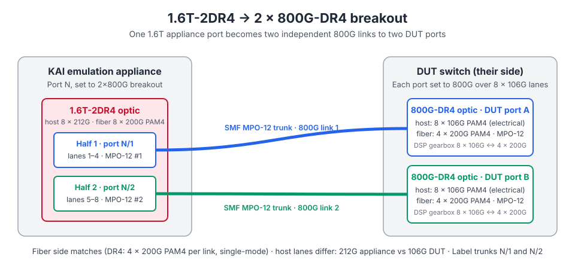

KAI Data Center Builder
A practitioner's guide to emulating AI training workloads over a real network fabric — so you can size, tune, and de-risk an AI data center before the GPUs arrive.
KAI_Data_Center_Builder_Guide.html lives on a local workstation and is not reachable from this
environment. Structure, concepts, and workflow are generic and vendor-accurate at the concept level; anything
environment-specific — licence servers, appliance addresses, exact CLI/API syntax, supported version matrix —
is marked <placeholder> and must be reconciled against your release's official documentation
before circulating.
1.What it is
An AI training cluster spends a surprising share of every training step not computing. Between back-propagation passes, thousands of accelerators must exchange gradients through collective operations. When the fabric under them is misconfigured — poor load balancing, a congestion-control setting that reacts too late, an unlucky rail assignment — the slowest flow sets the pace for the entire job. That shows up as inflated job completion time (JCT) and idle, very expensive silicon.
KAI Data Center Builder addresses the chicken-and-egg problem in validating that fabric: you cannot tune a network for AI traffic without the AI traffic, and you cannot generate realistic AI traffic without a GPU cluster you have not bought yet. It emulates the accelerator side of the cluster — the collective communication patterns and the compute gaps between them — and drives that traffic across real switches, real cables, and real NICs at line rate.
Emulate, don't simulate
Traffic crosses the device under test physically, so ASIC buffering, ECMP hashing, and congestion control behave as they will in production.
Scale without GPUs
A modest appliance footprint stands in for a large accelerator population, letting you rehearse designs long before hardware lands.
Change one variable
Deterministic, repeatable runs make A/B comparisons meaningful: same workload, one config delta, measurable JCT difference.
Speak the AI vocabulary
Experiments are expressed as collectives, parallelism strategy, and message sizes — not as abstract packet streams.
When to reach for it
- Design bake-off — rail-optimized vs. standard leaf-spine; 2-tier vs. 3-tier; oversubscription ratio trade-offs.
- Vendor / firmware qualification — same workload across two switch platforms or two firmware builds.
- Congestion-control tuning — ECN thresholds, PFC watermarks, DCQCN/rate-control parameters, buffer carving.
- Load-balancing evaluation — ECMP vs. flowlet vs. packet spraying, and their effect on tail latency.
- Failure-mode rehearsal — link down, degraded optic, single slow endpoint; measure how far the blast radius spreads.
- Regression gating — nightly runs that fail the build when JCT drifts beyond a threshold.
2.Core concepts
Collectives
Distributed training is built from a small set of collective communication primitives. Each stresses the fabric differently, and knowing which one dominates your job tells you which fabric property matters most.
| Collective | Pattern | Typical use | Stresses |
|---|---|---|---|
AllReduce | Every rank contributes, every rank receives the reduced result | Gradient synchronization in data parallelism | Bisection bandwidth; slowest-link sensitivity |
AllGather | Each rank's shard is distributed to all ranks | Weight/parameter gathering (e.g. sharded optimizers) | Fan-out, incast at receivers |
ReduceScatter | Reduce, then each rank keeps one shard | First half of a ring AllReduce; sharded gradients | Fan-in, buffer occupancy |
All-to-All | Every rank sends distinct data to every other rank | Mixture-of-Experts routing; sequence/expert parallelism | Load balancing — the harshest ECMP test |
Broadcast / Reduce | One-to-many / many-to-one | Checkpoint distribution, metric aggregation | Root-node hotspotting |
Parallelism strategy
How a model is split across accelerators determines where traffic lands in the topology:
- Data parallel (DP) — replicas hold the whole model; gradient
AllReduceeach step. Traffic is bulk, periodic, and spans the widest scope. - Tensor parallel (TP) — a single layer is split across accelerators; chatty, latency-sensitive exchanges. Normally kept inside a scale-up domain (one node / one rack).
- Pipeline parallel (PP) — layer groups on different stages; point-to-point activations, sensitive to stage skew (the "bubble").
- Expert parallel (EP) — MoE experts across ranks; dominated by
All-to-All, often the hardest pattern for a fabric to balance.
Real jobs combine these (often written as 3D or 4D parallelism, e.g. TP=8, PP=4, DP=16). The
product of the dimensions is the total rank count.
Compute gap
Between collectives, real accelerators are busy. The emulator reproduces that pause so communication arrives in a realistic rhythm rather than as a saturating flood. Two knobs matter: the gap duration (how long a step's compute takes) and the jitter (how much ranks drift apart). Jitter is what turns a well-behaved job into an incast event.
Job completion time (JCT)
The headline metric: wall-clock time to finish a fixed number of steps. Everything else in the tool exists to explain a JCT difference. A useful decomposition:
JCT = steps × ( compute_time + exposed_communication_time )
exposed_communication_time = collective_time − overlap_with_computeNetwork work reduces the second term. If a change moves JCT by less than run-to-run variance, it did not help — which is why repeatability matters as much as the measurement itself.
3.Architecture
Three planes, cleanly separated. Keeping management traffic off the data plane is not optional — it is what makes results trustworthy.
| Plane | Component | Responsibility |
|---|---|---|
| Control | Controller / web UI / REST API | Experiment definition, scheduling, orchestration, result storage, reporting |
| Data | Emulation appliance ports | Terminate RDMA endpoints, execute collectives, inject compute gaps, timestamp at hardware precision |
| Data | Device under test (DUT) | Your actual leaf/spine switches, optics, and cabling — the thing being characterized |
| Telemetry | Switch counters / streaming telemetry | Queue depth, ECN marks, PFC pause, drops — correlated against JCT on the same timeline |
4.Prerequisites
Hardware
- Emulation appliance(s) with enough ports at the DUT's native speed (100/200/400/800 GbE as applicable).
- DUT switches cabled in the topology you intend to characterize, with optics known-good.
- Out-of-band management network reaching the controller, the appliances, and every DUT.
Cabling: 1.6T appliance to 2×800G DUT (breakout)
The reference lab runs each appliance port in 2×800G breakout: one 1.6T-2DR4 optic in the appliance cage, fanning out to two 800G-DR4 optics on the DUT side. Each 1.6T port therefore presents as two independent 800G logical ports, and each one lands on its own DUT port. The two ends interoperate because they use the same optical technology: each half of the 1.6T-2DR4 is an 800G-DR4 interface (4 × 200G PAM4 over single-mode fiber), so it pairs with a standard 800G-DR4 optic.

| Side | Optic | Electrical / optical lanes | Port mode |
|---|---|---|---|
| Appliance | 1.6T-2DR4 (two MPO-12 connectors) | 8 × 200G PAM4, split into two groups of 4 | 2×800G breakout |
| DUT (×2) | 800G-DR4 (one MPO-12 connector) | 4 × 200G PAM4 | 800G, 4 lanes, no breakout |
- Single-mode MPO-12 trunks, one per 800G half. Use the polarity the optic vendor specifies for DR4 (normally straight-through / Type B) and APC connectors at both ends. Each half is a plain point-to-point DR4 link; there is no fan-out cable.
- Label which MPO is which half. Port
N/1andN/2on the appliance map to whatever DUT ports those trunks reach. Swapping the two trunks still gives link-up, but it silently moves ranks to the wrong leaf ports and breaks locality-aware results. - Match FEC and speed on both ends. 200G-per-lane links run RS(544,514) FEC. Set the appliance port to 2×800G and each DUT port to 800G over 4 lanes; anything auto-negotiated or forced differently on one side shows up as link-down or a link that flaps.
- Treat the two halves as sharing fate. Both 800G links live on one optic and one cage. An optic fault, reseat, or port reset takes down two DUT ports and two ranks at once, so account for that when you design failure-injection runs.
Software & access
- Controller software at a version compatible with the appliance firmware — check the release's compatibility matrix; a mismatch here is the single most common day-one failure.
- Valid licences reachable from the controller (
<licence-server-host:port>). - Switch credentials with permission to read counters and, if you plan to automate tuning sweeps, to apply config.
- A modern browser for the UI; an API token if you will drive it from scripts.
Fabric readiness checklist
- Lossless transport configured end to end if your workload assumes it (PFC priority, ECN marking, buffer allocation consistent on every hop).
- MTU consistent fabric-wide — a single hop with a smaller MTU will silently dominate your results.
- Routing converged and ECMP groups healthy; no leftover drained links from a previous test.
- Counters cleared before a measurement run.
5.Quick start
The shortest path from a cabled lab to a first meaningful number.
- Bring up the controller
Reach the controller at
https://<controller-host>, sign in, and confirm the licence status page is green. Resolve licensing before anything else — downstream errors caused by licensing rarely say so. - Register the emulation resources Add each appliance/chassis by management address. Put each 1.6T port into 2×800G breakout, then verify that both 800G logical ports show link up at 800G with RS(544,514) FEC, and that each one lands on the DUT port your cabling map says it should. A port that negotiated down to a lower speed will quietly halve your results.
- Describe the fabric Enter the topology (see §6) so the tool knows which emulated rank sits behind which leaf port. Rank-to-port mapping is what makes locality-aware results interpretable.
- Pick a starter workload
Begin with a single
AllReduceover all ranks at a fixed message size. One collective, no parallelism mix, no jitter. You are validating the harness, not the design. - Run and sanity-check Compare measured bus bandwidth against the theoretical ceiling for your port speed and rank count. With breakout the per-rank ceiling is 800G (the logical port), not the 1.6T of the physical cage. Within a sensible fraction of line rate means the plumbing is right. Wildly below means stop and debug the setup (§12) — do not start tuning.
- Lock the baseline Repeat the same run three to five times and record the spread. That spread is your noise floor: any future "improvement" smaller than it is not real.
- Change exactly one thing Now vary a single variable — ECN threshold, load-balancing mode, message size — and re-run. One delta per experiment is the entire discipline.
6.Modeling the fabric
Topology choices that matter
| Decision | Options | What it changes |
|---|---|---|
| Tiers | 2-tier leaf-spine, 3-tier with super-spine | Hop count, failure blast radius, cost per port |
| Rail design | Rail-optimized vs. standard | Whether same-rail collectives stay one hop away; strongly affects AllReduce efficiency |
| Oversubscription | 1:1, 2:1, 4:1 | Headroom under bursty All-to-All; where congestion first appears |
| Load balancing | ECMP hash, flowlet, packet spraying | Flow entropy handling; tail latency and reordering behavior |
| Transport | Lossless (PFC) vs. lossy with ECN-driven CC | Whether congestion turns into pause propagation or into drops and rate reduction |
Rank placement
Where ranks sit is a first-class experimental variable, not bookkeeping. The same workload on the same fabric can differ substantially in JCT depending on placement:
- Compact / locality-aware — consecutive ranks on the same leaf. Keeps TP traffic local, minimizes spine crossings. Usually the best case.
- Striped — ranks spread round-robin across leaves. Maximizes spine utilization; a good stress case for bisection bandwidth.
- Fragmented — the realistic case in a busy shared cluster, where a scheduler hands you whatever is free. Worth measuring explicitly: it is often where the surprise lives.
Entropy and hashing
RDMA jobs generate far fewer flows than a typical cloud workload. With only a handful of large, long-lived flows, an ECMP hash has little to work with, and two elephant flows colliding on one uplink can throttle an entire collective. Increasing entropy (more QPs per rank, varied source ports) or adopting adaptive/spraying load balancing is a standard remedy — and a first-class thing to A/B here.
7.Defining a workload
A workload definition answers four questions: who participates, what they exchange, how large, and how often.
| Parameter | Meaning | Starting point |
|---|---|---|
| Rank count | Number of emulated accelerators | Match the target cluster, or the largest the appliance supports |
| Parallelism | TP / PP / DP / EP dimensions | Mirror the model you plan to train; product = rank count |
| Collective(s) | Operations per step and their order | Start with one; add the mix once single-collective results are clean |
| Message size | Bytes per rank per collective | Sweep small → large; small sizes expose latency, large sizes expose bandwidth |
| Algorithm | Ring, tree, hierarchical, … | Ring for bandwidth-bound, tree for latency-bound; test both when unsure |
| Compute gap | Emulated per-step compute time | Derive from a real step time if you have one; otherwise sweep |
| Jitter | Spread in rank start times | Start at zero, then add — this is where incast appears |
| Steps / duration | Iterations per run | Long enough that startup transients are a small fraction of total |
A worked example
A 128-rank job with TP=8, PP=2, DP=8 and a small-MoE flavor, expressed as a portable experiment
descriptor. Field names below are illustrative — map them to your release's schema:
# experiment.yaml — illustrative structure, adapt to your release's schema
name: moe-128r-allreduce-vs-a2a
fabric:
topology: leaf-spine
leaves: 4
spines: 2
uplinks_per_leaf: 4
placement: compact # compact | striped | fragmented
job:
ranks: 128
parallelism: { tp: 8, pp: 2, dp: 8 }
steps: 200
compute_gap_ms: 12
gap_jitter_pct: 5
collectives:
- op: all_reduce
scope: dp # gradient sync across data-parallel replicas
message_bytes: 256Mi
algorithm: ring
- op: all_to_all
scope: ep # expert routing — the load-balancing stress case
message_bytes: 8Mi
transport:
type: rocev2
lossless: true
ecn: { min_kb: 100, max_kb: 400, probability: 0.02 }
qps_per_rank: 8 # raise for more ECMP entropy
measure:
primary: job_completion_time
also: [ bus_bandwidth, p99_collective_latency, ecn_marks, pfc_pause_duration ]
repeats: 5 # establishes the noise floor8.Running an experiment
- Pre-flight Links up at expected speed, counters cleared, no residual config from the previous run, DUT clock synced.
- Warm-up Discard the first handful of steps. Route caches, ARP/ND resolution, and CC state need to settle; including them inflates JCT and adds variance.
- Measurement window Run long enough for a stable average, and record the window explicitly so telemetry can be aligned to it.
- Repeat Minimum three runs, five is better. Report median and spread, never a single number.
- Capture everything Results plus switch counters, firmware versions, and the exact experiment descriptor. A result without its configuration is an anecdote.
Experiment hygiene
- One variable per comparison. If you changed ECN thresholds and load-balancing mode, you have learned nothing about either.
- Re-run the baseline periodically during a long tuning session — lab drift is real, and a shifted baseline invalidates the deltas you collected after it shifted.
- Keep a lab journal keyed by experiment name. Future-you will not remember why run 14 used a different MTU.
9.Reading the results
| Metric | What it tells you | Watch for |
|---|---|---|
| JCT | End-to-end cost of the job — the number that matters to the business | Compare medians; ignore deltas inside the noise floor |
| Algorithm / bus bandwidth | Effective throughput achieved by the collective | Well below theoretical ceiling ⇒ congestion, imbalance, or a negotiated-down link |
| Collective latency p50 / p99 / max | Distribution, not just the average | A wide p99/p50 gap means a straggler is pacing the job |
| Per-rank completion spread | Which ranks finish last, consistently | The same rank always last ⇒ a specific port, optic, or placement problem |
| ECN marks | Congestion signaled to senders | Near zero with high latency ⇒ thresholds too high to react in time |
| PFC pause frames / duration | Backpressure in a lossless fabric | Sustained pause is a red flag: congestion spreading upstream toward deadlock risk |
| Queue depth / buffer occupancy | Where packets are piling up | Isolates the specific hop and queue responsible |
| Drops / retransmits | Packet loss | In a lossless design, any nonzero value is a configuration bug until proven otherwise |
| Link utilization imbalance | How evenly uplinks are loaded | Large spread across a single ECMP group ⇒ entropy or hashing problem, not a capacity problem |
Diagnostic reasoning
Symptom → likely cause → next measurement:
- High JCT, low utilization, low ECN → the job is latency-bound or compute-gap-bound, not network-limited. Reduce the gap or shrink message size to confirm before touching the fabric.
- High JCT, uneven uplink utilization → load-balancing/entropy problem. Raise QPs per rank or change hashing mode and re-measure.
- High JCT, heavy PFC pause → congestion control reacting too slowly, so backpressure is doing the work. Lower ECN thresholds so senders slow before pause engages.
- High JCT, drops in a lossless fabric → PFC misconfigured on at least one hop, or a priority mismatch. Audit every hop, including the ones you are sure about.
- Good average, terrible p99 → a straggler. Find the consistently-last rank and inspect that path physically: optic, cable, port config.
10.Tuning playbook
Ordered by typical payoff per unit of effort. Re-measure after every single change.
- Fix the physical layer first Negotiated speed, FEC mode, error counters, marginal optics. No amount of congestion-control tuning compensates for one flapping link, and a bad optic mimics a congestion problem convincingly.
- Make MTU and priority mapping consistent Every hop, every direction. Inconsistency here produces results that look like a subtle CC issue and are not.
- Get load balancing right Usually the largest single win on AI fabrics, because low flow counts defeat naive hashing. Compare ECMP, flowlet, and spraying with the same workload; watch uplink imbalance, not just JCT.
- Raise entropy More QPs per rank gives the hash more to distribute. Cheap to try, frequently effective, and it interacts with the previous step — evaluate them together after evaluating each alone.
- Tune ECN before touching PFC You want senders to slow down before backpressure is needed. Lower the marking threshold until ECN marks appear early and PFC pause approaches zero.
- Use PFC as a safety net, not a mechanism Sustained pause means CC is not doing its job. Headroom and watermarks should prevent loss, not manage steady-state congestion.
- Revisit buffer carving
Only after CC behaves. Shared-buffer thresholds decide how much burst absorption a port gets; mis-carving
shows up as drops under bursty
All-to-Allwhile averages look fine. - Re-examine placement A locality-aware placement can beat a fabric-level change outright. If the scheduler in production cannot guarantee it, measure the fragmented case and design for that instead.
- Only then consider topology Adding spines or changing oversubscription is the expensive lever. Reach for it once you have shown the cheap ones are exhausted — and quantify the JCT gain per dollar before proposing it.
AllReduce),
one balance-stress case (All-to-All), and one failure case (a downed link).
11.Automation & CI
Manual runs prove a point once. Automated runs catch regressions forever. The pattern:
# nightly-fabric-regression — illustrative pseudocode
for cfg in baselines/*.yaml; do
run_id=$(kai-cli experiment start --file "$cfg" --wait) # adapt to your CLI/API
kai-cli results export --run "$run_id" --format json > "out/$(basename "$cfg").json"
done
# fail the build if JCT regressed beyond the measured noise floor
python3 compare.py --baseline golden/ --candidate out/ --tolerance-pct 3Practical guidance:
- Version experiment descriptors in git, next to the switch configs they assume. A result is only reproducible if both are pinned.
- Set the tolerance from the measured noise floor, not from a round number. If run-to-run spread is 4%, a 3% gate will page you every night.
- Gate on the median of repeats, never a single run.
- Archive raw results plus telemetry — when a regression appears, the counters from the failing night are what let you diagnose it without reproducing it.
- Re-baseline deliberately after an intentional config or firmware change, and record why in the commit message.
12.Troubleshooting
| Symptom | Likely causes | First checks |
|---|---|---|
| Controller cannot reach an appliance | Management routing/firewall; wrong address; version mismatch | Ping and port-check from the controller; confirm firmware is in the supported matrix |
| Ports down or at unexpected speed | Optic/cable fault; FEC mismatch; forced speed on the DUT side | Compare both ends' port config; swap the optic; read error counters |
| Only one half of a 1.6T breakout comes up | Appliance port not in 2×800G mode; one MPO trunk dirty, unseated, or wrong polarity; DUT port not set to 800G over 4 lanes | Confirm the breakout mode on the appliance; clean and reseat the dead half's MPO at both ends; compare lane-level optical power/BER for the two halves |
| Two ranks are slow or flap together | They are the two halves of one 1.6T-2DR4 optic, which is marginal or overheating | Check whether the affected ranks share a cage; swap the 1.6T optic and re-run — if the problem moves with the optic, it is the optic |
| Experiment fails to start | Licence unavailable; resource already reserved; invalid descriptor | Licence status page first; then who holds the reservation; then schema validation |
| Throughput far below line rate | Negotiated-down link; MTU mismatch; CC throttling; oversubscribed uplinks | Per-port utilization; MTU audit on every hop; ECN/PFC counters |
| Results vary wildly between identical runs | No warm-up; background traffic on the DUT; thermal/optic marginality; unsynced clocks | Add warm-up; isolate the DUT; check clock sync; re-run the baseline |
| One rank always finishes last | Bad port/optic on that path; asymmetric uplinks on its leaf; placement artifact | Move the rank to a different port and re-run — if the slowness follows the port, it is physical |
| PFC storm / traffic stalls | Pause propagating upstream; insufficient headroom; priority mismatch | Pause counters per hop to find the origin; verify priority mapping end to end |
| Drops on a "lossless" fabric | PFC not enabled on every hop; wrong priority; buffer headroom too small | Audit PFC config hop by hop — assume nothing about the hops you did not configure yourself |
| Telemetry and results do not line up | Clock skew; wrong measurement window; counters not cleared | Verify time sync; record window boundaries explicitly; clear counters pre-run |
13.Glossary
- AllReduce
- Collective where every rank contributes data and every rank receives the reduced result; the backbone of data-parallel gradient sync.
- All-to-All
- Every rank sends distinct data to every other rank; dominant in Mixture-of-Experts routing and the harshest test of fabric load balancing.
- Breakout
- Running one physical port as several lower-speed logical ports. Here a 1.6T-2DR4 optic carries two independent 800G-DR4 links, each to its own DUT port.
- Bus bandwidth
- Normalized throughput measure for a collective that allows comparison across rank counts and algorithms.
- Collective
- A communication primitive involving a group of ranks acting together, as opposed to point-to-point messaging.
- Compute gap
- Emulated time a rank spends computing between collectives; what makes generated traffic resemble a real training rhythm.
- DCQCN
- Congestion-control scheme for RoCE combining ECN marking with rate adjustment at the sender.
- DUT
- Device under test — the switch, firmware, or fabric being characterized.
- ECMP
- Equal-cost multi-path routing; distributes flows across parallel uplinks, usually by hashing header fields.
- ECN
- Explicit Congestion Notification; marks packets instead of dropping them so senders can slow down early.
- Incast
- Many senders targeting one receiver simultaneously, overwhelming its buffers; a classic collective failure mode.
- JCT
- Job completion time — wall-clock duration of the emulated job; the primary outcome metric.
- PFC
- Priority Flow Control; per-priority link-level pause used to build lossless Ethernet.
- QP
- Queue pair — the RDMA connection endpoint abstraction; more QPs per rank means more entropy for ECMP hashing.
- Rail
- One of several parallel network planes; rail-optimized designs keep corresponding ranks on the same plane to shorten collectives.
- Rank
- One participant in a distributed job, conventionally one accelerator; emulated here rather than physically present.
- RoCEv2
- RDMA over Converged Ethernet v2 — routable RDMA over UDP/IP, the common transport for Ethernet AI fabrics.
- Straggler
- A rank that consistently finishes late and therefore paces the whole job, since collectives complete only when all ranks arrive.
14.Next steps
- Reconcile with the official docs. Replace every
<placeholder>, and pin the CLI/API syntax and supported-version matrix for your specific release. - Add your lab's specifics. Topology diagram, port map, cabling table, licence server, appliance addresses.
- Commit your baseline descriptors alongside this guide so the repository holds both the method and the reference numbers.
- Automate the regression run (§11) once two or three baselines are stable.
If you can share the original KAI_Data_Center_Builder_Guide.html — paste its contents into the
chat or commit it to this repository — the two can be merged so nothing from the original is lost.